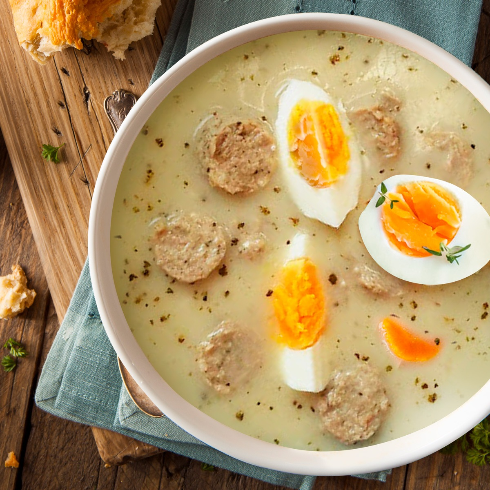

Żurek

Description
With its distinctive sour flavour and hearty ingredients, this soup embodies the essence of Polish comfort food. Made with fermented rye flour and enriched with kiełbasa and aromatic spices, it's a culinary delight worth exploring.
Ingredients
- 8.5 cups (2 litres, 0.5 gallon) meat stock (chicken, mixed-meat, rosół works great too)
- 7 oz (200g) unsliced bacon
- 1 (200g, 7 oz) medium white onion
- 2 medium carrots (roughly 4.2 oz, 120g)
- 2 parsley roots (roughly 4.2 oz, 120g) - can be substituted for a celery root
- 4 links (500g, 1.1 lb) white kiełbasa sausage (fresh, uncooked)
- 2 ¼ cups (500ml) Sour Rye Flour Starter (link to a recipe in the notes)
- 1 garlic clove
- 3 tbsp whipping cream (optional, 30-36% fat)
- 1 tbsp dried marjoram
- Salt to taste
- Pepper (freshly ground) to taste
Steps
- Get a cooking pot. Pour in the stock and start heating it up (on a medium heat).
- Chop bacon and onion into small cubes. Using a frying pan, fry up the bacon first. There is need to add any additional frying fat, bacon will release plenty of its own.
- Once the bacon fat has rendered, add the onion pieces and continue frying until both ingredients turn golden.
- Move the contents of the frying pan into the pot with cooking stock. If your 'zakwas' starter was fermented without spices (that is: bay leaves, all-spice berries and peppercorns), it's a good moment to add them directly into the soup. I place them inside a mesh spice bag/stock sachet, so that I don't have to struggle fishing them out later.
- Peel carrots and parsley roots, drop them whole into the stock.
- Add white kiełbasa (uncut, whole links) as well and continue cooking for 30-40 minutes, until the stock becomes meaty in aroma and flavour (you'll have to test that empirically).
- If you haven't boiled the eggs already, now is a good moment to do so. Once cooked, allow them to cool down.
- The next step would be to remove the spices. If you used the spice bag, just take it out. Otherwise, you can fish them out manually with a spoon, or get rid of them using a sieve - and return the soup into the pot.
- Now it's time to add rye 'zakwas' starter. Add 1⅓ cup (300ml) of zakwas for a mild Żurek, up to 2 cups (or more; roughly 500ml) for a more sour result. If you're not sure how much you should add, just pour it over gradually, tasting along the way.
- Add 1 tablespoon of dried marjoram and one garlic clove (crushed or roughly chopped), cook for another 4-5 minutes.
- Remove the pot from heat. Remove the sausage and vegetables with a slotted spoon, slice them all and return to the pot. You can also leave the sausage unsliced - that's up to you.
- Adding cream is optional, but it balances the flavours very nicely. Place 3 tablespoons of whipping cream into a cup or a small bowl. Add in a tablespoon of Żurek, mix well with a fork. And another spoonful of soup and mix again. Repeat with 2 more tablespoons of Żurek. Pour the mixture into the pot.
- Have a taste. Does it need any more salt or a pinch of pepper? If so, add some to taste. Garnish with fresh marjoram or chopped parsley and serve with boiled egg halves.
- Smacznego!
Home